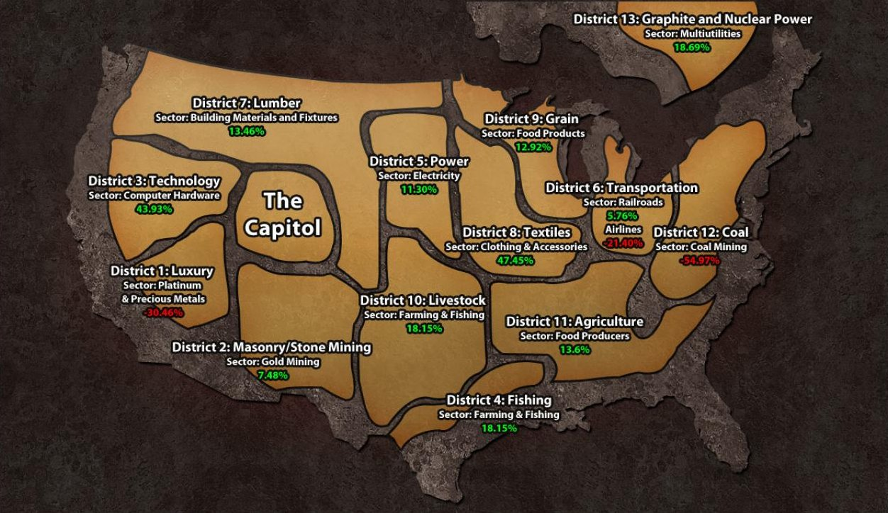
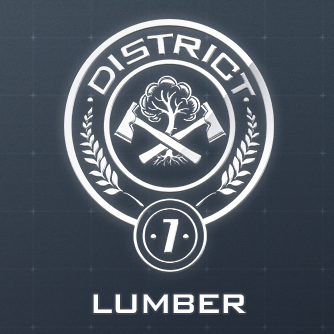

Panem was orginally the United States of America, it's split up into 13 Districts as well as the Capitol. Panem was founded long before the books took place, modern civilization as we know it was destroyed when the face of the Earth changed. This led to the end of the world, most likely due to natural disasters that were caused when the Earth went through those changes. North America's land mass ended up surviving although, it got significantly smaller as the sea levels rose around it. North America was presumeably the only inhabited land mass left on Earth. The people that were left eventually formed an established nation that would later be known as Panem. As the nation grew, they were able to split up the country up into 13 Districts. Each District had a different industry that would fufill the growing needs of the nation. They all operated under the control of the opressive Capitol. The Districts had no say in the government and weren't even allowed to interact with eachother, this led to each District haveing a unique culture
Panem eventually fell into what was known as "The Dark Days". This occured when the Districts started to rebel. This rebellion ended when the Capitol defeated 12 of the Districts and silenced District 13, subsequently ending the war and showing their true power and what they were capable of. As punishment for the Districts' treason, the Capitol made the Hunger Games. Each District is required to reap a male and a female for the Hunger Games and they would fight to death in the area until one child was left while the entire country watched. As for District 13, the Capitol convinced the public that it has been destroyed and that it was inhabitable due to the chemical bombs that the Capitol had dropped. Every once in a while, the Capitol would brodcast the other Districts footage of District 13 in ruins but, these broadcasts were fake. District 13 had actually made a deal with the Capitol, they were allowed to secede from Panem. Seeing how District 13 could be a threat with nuclear program, the Capitol proposed a treaty where both District 13 and the Capitol agreed not to attack each other, another part of the deal was that District 13 was not required to participate in the Hunger Games. The citizens of District 13 live underground to oblide with the Capitol's treaty.

There are 3 career Districts, that the Capitol prefered over the other Districts, as they provided the Capitol with more luxurious items. They are Districts 1, 2, and 4. The Career Districts often had academies where children attended to prepare for the Hunger Games, even though tributes were not supposed to have prior training for the Hunger Games
The president of Panem during the Hunger Games trilogy is Coriolanus Snow, a cruel and manipulative man. Snow became president because he killed his opponents by giving them a drink with poison. To remove suspicion, he would drink from the same glass in which he gave his opponents their drink, however when he drank it, he would add the antidote. Even with the antidoe he still got blood sores, to cover up the smell of blood, he would use a white rose, which is the reason he always carries one.
| District | Industry | Type | Victor(s) | Tributes | Symbol |
|---|---|---|---|---|---|
| Capitol | N/A | N/A | N/A | N/A | |
| 1 | Luxury | Career | Gloss, Cashmere, Augustus Braun | Glimmer, Marvel | |
| 2 | Masonry | Career | Brutus, Lyme, Enobaria | Clove, Cato | |
| 3 | Technology | Regular | Beetee, Wiress | Unknown | |
| 4 | Fishing | Career | Mags Flanagan, Finnick Odair, Annie Cresta | Unknown | |
| 5 | Power | Regular | Porter Millicent Tripp | Foxface | |
| 6 | Transportation | Regular | Unknown | Unknown | |
| 7 | Lumber | Regular | Blight, Johanna Mason | Unknown |  |
| 8 | Textiles | Regular | Woof, Cecelia | Unknown | |
| 9 | Grain | Regular | Unknown | Unknown | |
| 10 | Livestock | Regular | Unknown | Unknown | |
| 11 | Agriculture | Regular | Seeder, Chaff | Rue, Thresh | |
| 12 | Mining | Regular | Haymitch, Katniss, Peeta | Katniss, Peeta | |
| 13 | Graphite Mining, Nuclear Weaponry | Regular | N/A | N/A |